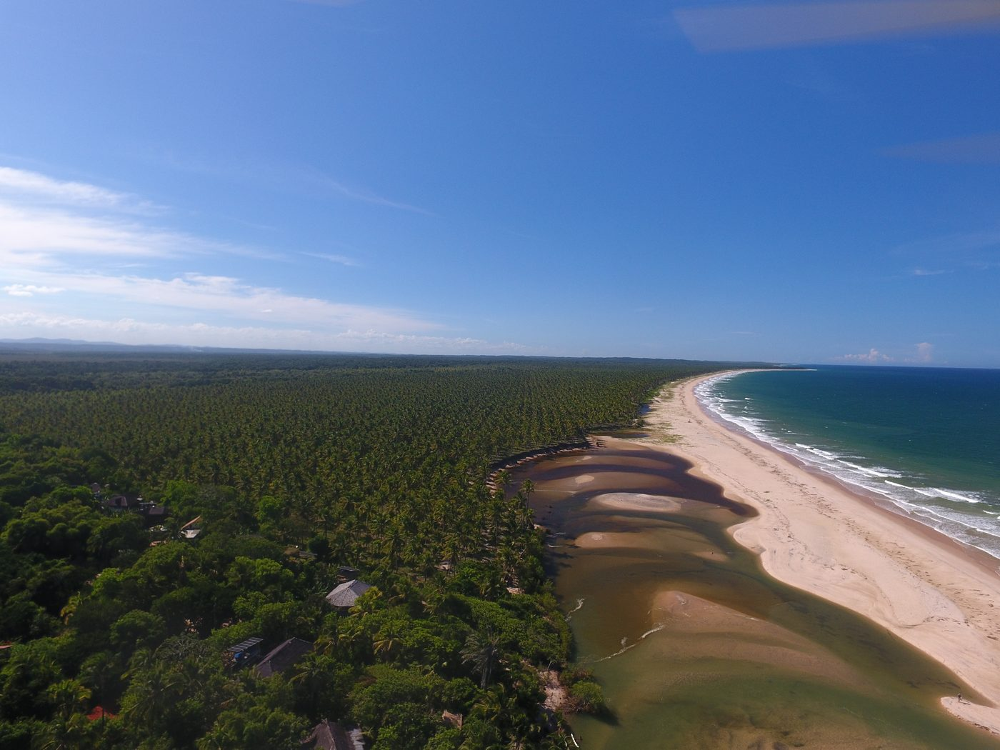

O primeiro ciclo completo da Certificação Participativa Somos Água — em números.

Ecovila Piracanga · Mata Atlântica e praia
A presença de Escherichia coli na água indica contaminação por fezes humanas ou animais — geralmente por falhas nos sistemas de saneamento. A melhora se deve à revisão semestral intensiva dos sistemas.
De 74% em 2019 para 14% em 2024 — resultado direto do primeiro ciclo de certificação.
* Em 2023 não houve coleta abrangente devido à desarticulação do GT das Águas.
A equipe — Welton Santos (Nego) e Santiago Lingurini — percorreu todas as casas certificadas, inspecionando e orientando cada sistema.
Sistema mais comum nas casas certificadas.
Sem uso de água — gera composto orgânico.
Devolve água limpa à atmosfera.